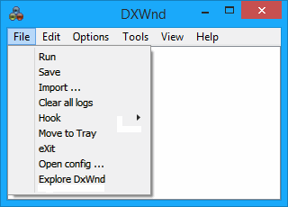

|
Run |
Starts the currently selected application. (Shortcut key: Enter) |
|
Save |
Saves the current configuration to disk. |
|
Import... |
Imports one program configuration from an external .dxw exported file. |
|
Clear all logs |
Turns off all tracing options for all games in the list and deletes any dxwnd.log file. |
|
Hook |
Hook Stop is a handy way to prevent DxWnd from doing its job. It is similar to stopping the program but leaving it running (in the IDLE state). Hook Start restores the default behavior (the READY state, or RUNNING when operating on a task). |
|
Move to Tray |
Move DxWnd to the System Tray, where a dedicated icon will show its state and allow a few commands, including the option to show the application window again. Note that once DxWnd goes in the System Tray, it always stays there even after its window is restored. |
|
eXit |
Exits DxWnd. Beware that if a game was activated while DxWnd was active, exiting DxWnd while the game is still running will very likely crash the game, so DxWnd will check for this and prompt you to confirm the operation. |
|
Open config ... |
Allows switching multiple config files in addition to default dxwnd.ini. (expert mode only) |
|
Explore DxWnd |
Opens the DxWnd folder in Windows file explorer. |